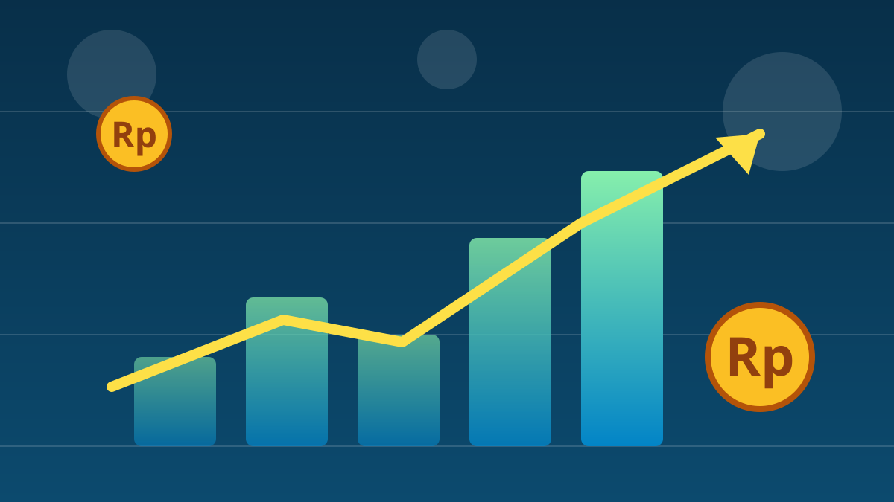

1 / 6

💰 EKONOMI
Sovereign wealth fund RI siap jadi "pemadam kebakaran" bursa
Angkanya gede banget: Rp17,89 triliun standby buat beli saham kalau pasar panik. Geser buat spill lengkapnya →
2 / 6
🎯
Kapan Danantara turun tangan?
Kepala Investasi Publik Danantara Investment Management, Rani Piputri, bilang Danantara bisa "turun tangan" kalau pasar krisis akibat sentimen eksternal yang sifatnya sementara.
Tapi dia tegas: "Tujuannya bukan untuk menstabilkan pasar" — keputusan beli tetap berdasarkan valuasi yang menarik dan uji tuntas, bukan buat nahan indeks. (dikutip dari wawancara Reuters, awal Oktober 2026)
3 / 6
💵
Angkanya: segini duit yang disiapkan
Danantara menyiapkan hingga US$1 miliar — sekitar Rp17,89 triliun (asumsi kurs Rp17.891) — untuk investasi di pasar modal domestik sampai akhir 2026.
Sebagai gambaran, Danantara sudah mengalokasikan sekitar US$3 miliar (~Rp53,67 triliun) untuk saham dan obligasi, baik dalam maupun luar negeri. Pembeliannya bakal selektif, terutama hati-hati di saham-saham AI.
4 / 6
⚠️
Pemicu waspadanya: review MSCI bulan depan
MSCI dijadwalkan meninjau klasifikasi pasar modal Indonesia bulan depan. Sejak peringatan Januari lalu, Indonesia berisiko turun kasta dari emerging market ke frontier market.
Tekanan nyata: Financial Times melaporkan IHSG sudah turun 28 persen sepanjang 2026 — terburuk secara global. Senin (12/10) IHSG juga sempat anjlok 1,93% ke level 5.975,78.
5 / 6
📊
Konteks pasar minggu ini
Jumat (9/10) lalu IHSG sempat rebound 1,04% ke 6.093,76. Analis memperkirakan minggu ini indeks bergerak di kisaran 6.000–6.215, dengan pertemuan tahunan IMF–Bank Dunia di Bangkok (12–18 Oktober) jadi sorotan.
Penyeimbang domestik: cadangan devisa kokoh di US$146,3 miliar dan indeks keyakinan konsumen masih optimistis di 118,1.
6 / 6
🤔
Efeknya ke lo apa?
Punya reksadana saham atau nabung buat IPO? Portofolionya ikut naik-turun sama IHSG. Kalau MSCI beneran nurunin status Indonesia, dana asing bisa kabur dan harga saham makin diskon.
Catatan penting: jangan panik jual atau ikut-ikutan beli cuma karena berita ini. Pahami dulu profil risikonya — dan kalau bingung, dana darurat jangan dipakai buat saham. ✌️